화약취급기능사 (2003-01-26 기출문제)
1과목: 화약 및 발파
1. 다음 중 예감제의 혼합성분에 속하는 것은?
- NaCl
- Mg
- Na4B4O7
- DNN
(정답률: 알수없음)

2. 분해속도가 느리고 흡습성이 거의 없는 산화제는?
- 질산칼륨
- 질산암모늄
- 염소산칼륨
- 과염소산칼륨
(정답률: 알수없음)
3. 무연화약의 용도는?
- 발사약
- 기폭제
- 폭파약
- 첨장약
(정답률: 알수없음)
4. 다음중 구리뇌관과 관계가 깊은 것은?
- Pb(N3)2
- NH4NO3
- Hg(ONC)2
- KNO3
(정답률: 알수없음)
5. 다음 설명 중 옳은 것은?
- 둔성폭약시험은 폭약의 감도를 측정하는 시험이다.
- 탄동진자시험은 폭약의 안정도를 측정하는 시험이다.
- 납판시험은 뇌관의 성능을 측정하는 시험이다.
- 내열시험은 폭약의 일한 효과를 측정하는 시험이다.
(정답률: 알수없음)
6. 니트로 글리세린의 산소평형은 다음과 같다.『C3H5N3O9 → 3CO2 + 2.5H2O + 1.5N2 + 0.25O2 』니트로 글리세린 1몰(227.1g)의 산소평형값은?
- -0.740
- +0.001
- +0.017
- +0.035
(정답률: 알수없음)
7. 파단선을 따라서 인공적으로 파단면을 만들어 폭파응력이나 파괴의 전파를 차단하는 조절발파방법은? (단, 파단선은 무장약공임)
- 프리스프리팅(Pre-Splitting)법
- 쿠션블라스팅(Cushion Blasting)법
- 라인드릴링(Line Drilling)법
- 스므스블라스팅(Smooth Blasting)법
(정답률: 알수없음)
8. 다음중 임계원에 대한 설명이 바른 것은?
- 안전율이 최소인 원
- 안전율이 최대인 원
- 내부마찰각이 0인 원
- 안전율이 1인 원
(정답률: 알수없음)
9. 다음 중 도폭선의 심약에 사용하지 않는 것은?
- 티니트로톨루엔(TNT)
- 헥소겐(RDX)
- 테트릴(Tetryl)
- 펜트리트(PENT)
(정답률: 알수없음)
10. 단발전기뇌관의 구조를 나타낸 다음의 그림에서 A, B, C, D, E의 명칭을 차례로 옳게 설명한 것은?
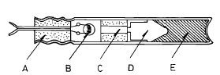
- 색전, 백금선교, 연시장치, 첨장약, 기폭약
- 색전, 각선, 기폭약, 연시장치, 첨장약
- 기폭약, 각선, 색전, 연시장치, 첨장약
- 색전, 백금선교, 연시장치, 기폭약, 첨장약
(정답률: 알수없음)
11. 전기감도를 알고자 할 때 사람몸의 정전용량 평균값은?
- 0.001[㎌]
- 0.003[㎌]
- 0.0003[㎌]
- 0.0006[㎌]
(정답률: 알수없음)
12. 다음 화약류중 발화점이 가장 높은 것은?
- 헥소겐
- T.N.T
- 피크린산
- 아지화납
(정답률: 알수없음)
13. 폭발위력 시험에 해당되지 않는 것은?
- 연주확대시험
- 탄동진자시험
- 탄동구포시험
- 유리산시험
(정답률: 알수없음)
14. 다음 사항중 시험발파를 실시하여 알아볼 수 없는 것은?
- 파괴암석의 크기
- 비산정도
- 폭약비중
- 안전율
(정답률: 알수없음)
15. 어느 암석에 대한 평가결과 단축압축강도가 1000Kg/㎝2이고 R.Q.D 40∼50%정도이면 암질상태는?
- 보통
- 나쁨
- 좋음
- 매우 좋음
(정답률: 알수없음)
16. 누두지수가 1일경우 누두공의 수정항 값 f(n)은?
- 0.5
- 1
- 1.5
- 2
(정답률: 알수없음)
17. 동시에 모든 발파공을 발파하는 방법은?
- 제발발파법
- 지발발파법
- 단발발파법
- 확저발파법
(정답률: 알수없음)
18. 2자유면 이상의 발파에 있어서 최소저항선과 공심(천공장) 관계가 옳은 것은? (단, D = 공심, W = 최소저항선, m = 장약장)
- D = m + W
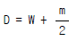
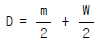
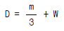
(정답률: 알수없음)
19. 다음 사항은 쿠션 블라아스팅법(Cushion blasting)에 대한 특징이다. 내용이 틀린 것은?
- 라인드릴링법보다 천공간격이 좁아 천공비가 적게 든다.
- 견고하지 않은 암반의 경우나 이방성 암반에도 적용하기 쉽다.
- 천공안의 약포의 배열이 어려워 지하 암반발파시 적용이 곤란하다.
- 지표면에서 경사 또는 수직공의 경우에도 사용될 수있다.
(정답률: 알수없음)
20. 발파작업의 3요소가 아닌 것은?
- 착암
- 전색
- 발파
- 쇄석운반
(정답률: 알수없음)
2과목: 화약류 안전관리 관계 법규
21. 그림과 같이 천공법으로 소할발파 하고자 한다. 이 때의 장약량은 얼마인가 ? (단, 발파계수는 0.004이다.)
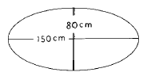
- 25.6g
- 26.6g
- 27.6g
- 28.6g
(정답률: 알수없음)
22. 전기뇌관에서 백금선 전교길이 3mm일 때 뇌관 1개의 전기 저항은?(단, 각선길이 : 1.5m, 각선전기저항 : 0.084Ω /m, 전교선저항 : 340Ω/m)
- 0.252Ω
- 1.02Ω
- 0.126Ω
- 1.27Ω
(정답률: 알수없음)
23. 어떤 발파에 있어서 최소 저항선이 2m, 장약량이 3.2㎏으로 표준 장약량이 되었다. 최소 저항선이 3m일 때의 장약량은?
- 6.0㎏
- 6.4㎏
- 9.6㎏
- 10.8㎏
(정답률: 알수없음)
24. 다음중 유한 사면의 파괴와 거리가 먼 것은?
- 사면선단파괴
- 사면내파괴
- 사면외파괴
- 저부파괴
(정답률: 50%)
25. 발파작업시 대피장소로서 적당하지 않는 것은?
- 폭파로 인한 파석이 날아오지 않는 곳
- 경계원으로부터 연락을 받을 수 있는 곳
- 폭음소리가 들리지 않는 안전한 장소
- 폭파의 진동으로 천반이나 측벽이 무너지지 않는 곳
(정답률: 알수없음)
26. 화약류 폐기의 기술상의 기준중 도화선의 처리방법은?
- 연소처리 하거나 물에 적셔서 분해처리 한다.
- 땅속에 묻는다.
- 공업용 뇌관 또는 전기 뇌관으로 폭발시킨다.
- 수용액으로 하여 강물에 흘려 버린다.
(정답률: 알수없음)
27. 행정자치부령이 정하는 안정도시험에 사용하는 시험기와 거리가 먼 것은?
- 내열시험기
- 정제활석분
- 적색리트머스시험지
- 옥도가리전분지
(정답률: 알수없음)
28. 돌침 또는 가공지선의 가공선은 피보호 건물의 상단으로부터 돌침의 상단 까지의 높이는 최소 몇 m 이상으로 설치 하여야 하는가 ? (단, 피뢰장치에한함)
- 10m
- 7m
- 5m
- 3m
(정답률: 알수없음)
29. 화약류 저장소에서의 저장방법 중 틀린 것은?(단, 수중저장소는 제외)
- 저장소 안쪽벽으로부터 30㎝ 띄우고 저장한다.
- 높이는 천정으로부터 30㎝ 띄우고 저장한다.
- 안쪽 바닥에 높이 9㎝ 이상의 받침대를 깔고 저장한다.
- 경계울타리 안에는 발화하기 쉬운 물건은 두지 아니한다.
(정답률: 알수없음)
30. 화약류의 폐기에 관한 다음 기술중 옳은 것은?
- 폐기하는 곳을 관할하는 경찰서장의 허가를 받아야 한다.
- 폐기하는 곳을 관할하는 경찰서장에게 신고를 하여야 한다.
- 폐기하는 곳을 관할하는 경찰서장의 승인을 받아야 한다.
- 폐기하는 곳을 관할하는 경찰서장의 인가를 받아야 한다.
(정답률: 알수없음)
31. 화약류의 사용지를 관할하는 경찰서장의 사용허가를 받지 아니하고 발파 또는 연소시킬 경우의 처벌내용은? (단, 광업법에 의한 경우 제외)
- 5년이하의 징역 또는 1천만원이하의 벌금형
- 5년이하의 징역 또는 500만원이하의 벌금형
- 3년이하의 징역 또는 300만원이하의 벌금형
- 3년이하의 징역 또는 500만원이하의 벌금형
(정답률: 알수없음)
32. 사용허가를 받지 아니하고 화약류를 사용할 수 있는 사람으로서 건축, 토목공사용으로 1일 동일한 장소에서 사용할 수 있는 수량은?
- 산업용 실탄 200개 이하
- 미진동 파쇄기 1500개 이하
- 광쇄기 200개 이하
- 건설용 타정총용 공포탄 5000개 이하
(정답률: 알수없음)
33. 화약류 1급 저장소의 최대 저장량으로 틀린 것은?
- 총용뇌관 : 5000만개
- 전기도화선 : 무제한
- 공업뇌관 : 6000만개
- 화약 : 80톤
(정답률: 알수없음)
34. 지하 1급 저장소의 지반 두께가 24m 일 때 폭약은 얼마까지 저장 할 수 있는가?
- 40톤 이하
- 35톤 이하
- 25톤 이하
- 17톤 이하
(정답률: 알수없음)
35. 화약류 저장소 이외의 장소에 화약류 판매를 위해 저장할 수 있는 폭약량은?
- 1㎏
- 3㎏
- 5㎏
- 7㎏
(정답률: 알수없음)
36. 화성암중에 SiO2가 몇 % 함유하면 산성암이라고 하는가?
- 45% 이하
- 52% 정도
- 60% 정도
- 66% 이상
(정답률: 90%)
37. 화성암을 구성하고 있는 광물입자의 크기를 좌우하는 요인은 무엇인가?
- 마그마의 화학성분
- 마그마의 밀도
- 마그마의 광물성분
- 마그마의 냉각속도
(정답률: 100%)
38. 다음의 화성암중 심성암과 가장 거리가 먼 것은?
- 현무암
- 화강암
- 섬록암
- 반려암
(정답률: 알수없음)
39. 화학 조성이 SiO2인 것은?
- 석영
- 백운모
- 각섬석
- 정장석
(정답률: 알수없음)
40. 세계적으로 그 분포가 가장 넓고 보통 화강암이라고 부르는 것은?
- 각섬화강암
- 흑운모 화강암
- 화강섬록암
- 백운모 화강암
(정답률: 알수없음)
3과목: 암석 및 지질
41. 야외에서 채취한 암석이 조직상으로 반상이고, 색은 약간 암색이었다면 어느 항과 가장 관계가 깊은가?
- 심성암, 중성암
- 반심성암, 규장질암
- 반심성암, 중성암
- 화산암, 고철질암
(정답률: 알수없음)
42. 다음 설명중 현무암과 관계 없는 것은?
- 용암표면에 특수한 유동구조를 보인다.
- 다공질구조를 가진다.
- 엽리를 나타낸다.
- 제주도, 울릉도, 백두산, 한탄강에 분포한다.
(정답률: 알수없음)
43. 둥근자갈들 사이를 모래나 점토가 층진하여 교결된 것으로 자갈 콘크리트와 같은 암석은?
- 역암
- 사암
- 편암
- 이회암
(정답률: 알수없음)
44. 다음중 쇄설성 퇴적암에 속하는 것은?
- 석회암
- 감람암
- 규조토
- 각력응회암
(정답률: 알수없음)
45. 퇴적암의 주요한 특징과 관계없는 것은?
- 층리
- 연흔
- 편마구조
- 건열 및 빗자국
(정답률: 알수없음)
46. 근원지에서 멀리 떨어진 하천의 하류에서 형성된 쇄설성 퇴적암이 갖는 특징이 아닌 것은?
- 분급이 양호하다.
- 장석을 많이 함유한다.
- 퇴적물 입자들의 원마도가 양호하다.
- 주성분 광물은 석영이다.
(정답률: 알수없음)
47. 다음의 암석중 편리구조를 가진 변성암은?
- 점판암
- 흑운모편마암
- 셰일
- 규암
(정답률: 알수없음)
48. 다음 중 동력변성 작용으로 생성된 암석은?
- 스카른광물
- 편마암
- 호온펠스
- 대리석
(정답률: 60%)
49. 암석의 변성 작용에 대한 설명중 틀린 것은?
- 구성광물 알갱이의 형태를 변화시켜 새로운 광물이 만들어지는 재결정 작용
- 암석의 구성 광물들이 파쇄되는 압쇄작용
- 새로운 물질이 첨가되는 교대작용
- 마그마의 정출작용
(정답률: 알수없음)
50. 석회암이나 백운암이 열과 압력을 받아 변성되면 무슨 암석이 되는가?
- 석류석
- 셰일
- 호온펠스
- 대리석
(정답률: 알수없음)
51. 지표면이 침식에 의해 삭박되면 하부의 암석은 점차 위에서 누르는 압력이 제거되어 장력 효과를 일으키는데 이때 생기는 절리는?
- 주상절리
- 구상절리
- 전단절리
- 판상절리
(정답률: 알수없음)
52. 축면과 양쪽 윙(wing)이 같은 방향으로 기울어 지면서 거의 평행하게 경사된 습곡은?
- 등사습곡
- 횡와습곡
- 평행습곡
- 배심습곡
(정답률: 알수없음)
53. 다음 그림은 무슨 단층을 나타낸 것인가?
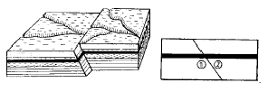
- 정단층
- 수직단층
- 역단층
- 주향이동단층
(정답률: 알수없음)
54. 화강암과 같은 암석이 화학적 풍화작용을 계속 받게되면 상대적으로 증가되는 암석성분은 무엇인가?
- 감람석
- 석영
- 각섬석
- 휘석
(정답률: 알수없음)
55. 아래의 조건에 해당되는 사암은 무엇인가?
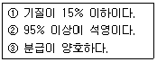
- 석영사암(Quartz arenite)
- 장석사암(Arkose)
- 이질석영사암(Quartz Wacke)
- 잡사암(Graywacke)
(정답률: 알수없음)
56. 주향의 측정시 어느 방향를 기준으로 측정하는가?
- 자북
- 도북
- 진북
- 북극
(정답률: 알수없음)
57. 한반도의 지질분포중 선캠브리아기 지층은 국토 면적의 몇 %를 점유하는가?
- 10%
- 25%
- 50%
- 70%
(정답률: 알수없음)
58. 화강암의 표준 지질기호(geologic symbol)로 가장 올바른 것은?
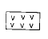
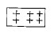
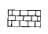
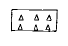
(정답률: 알수없음)
59. 정장석이 화학적 풍화작용을 받으면 어떤 광물로 변하는 가?
- 석회석
- 고령토
- 형석
- 인회석
(정답률: 알수없음)
60. 육안으로 화성암의 파면을 볼 때 광물 알갱이들이 하나하나 구별되어 보이는것을 (a)조직(석리)이라 하고 이를 (b)조직(석리)이라 고도 한다. ( )속의 a와 b로 옳은 것은? (순서대로 a조직, b조직)
- 비현정질, 반상
- 미정질, 반정
- 현정질, 입상
- 유리질, 석기
(정답률: 알수없음)